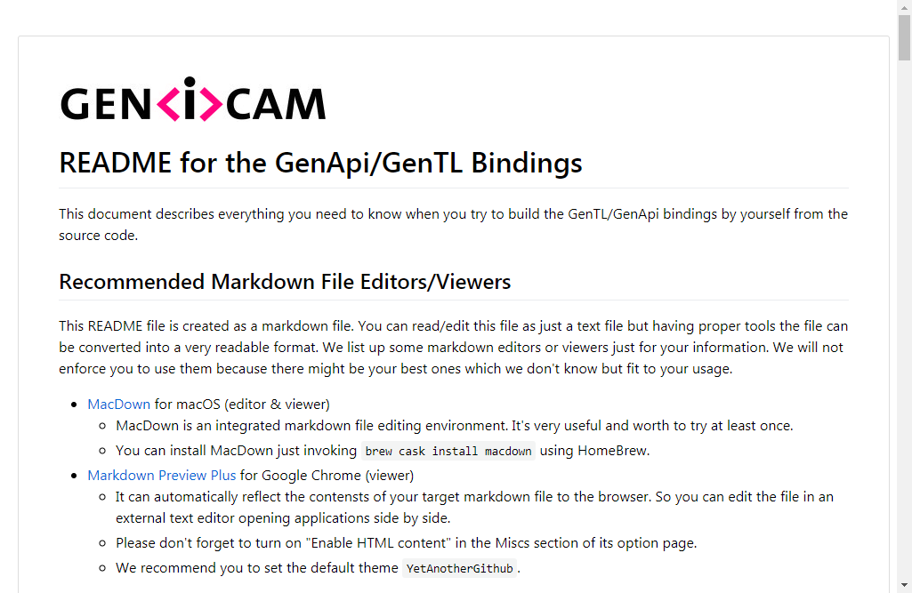
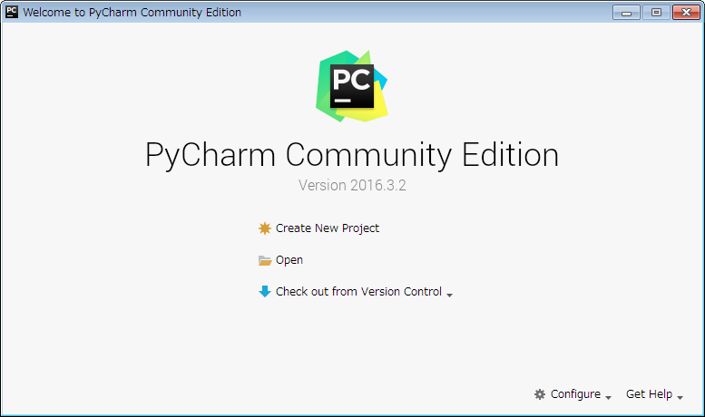
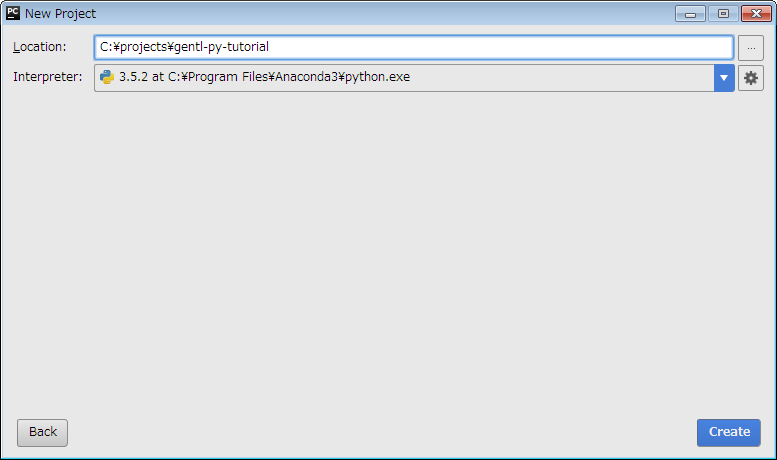
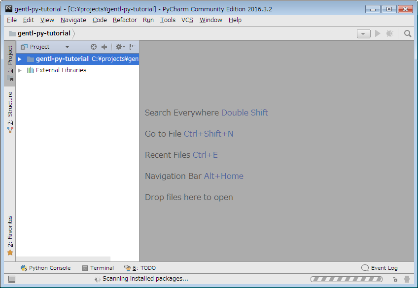
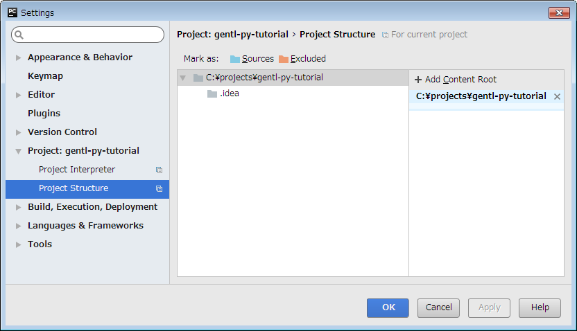
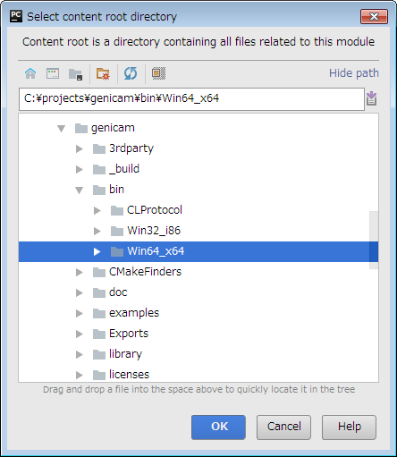
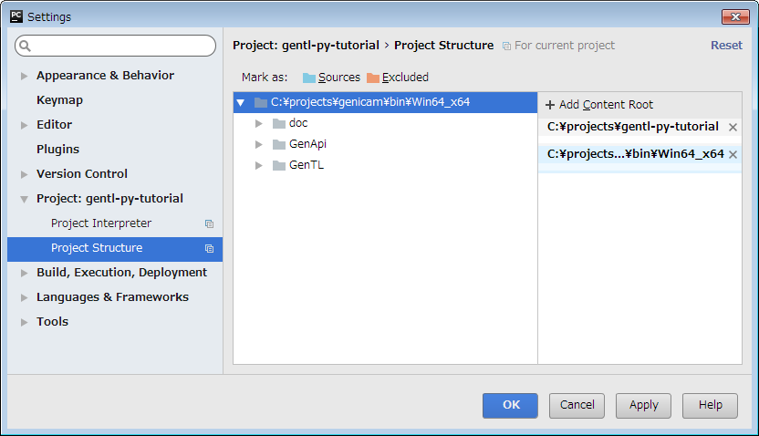
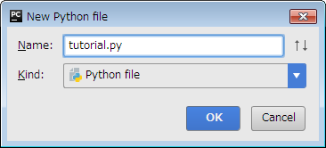
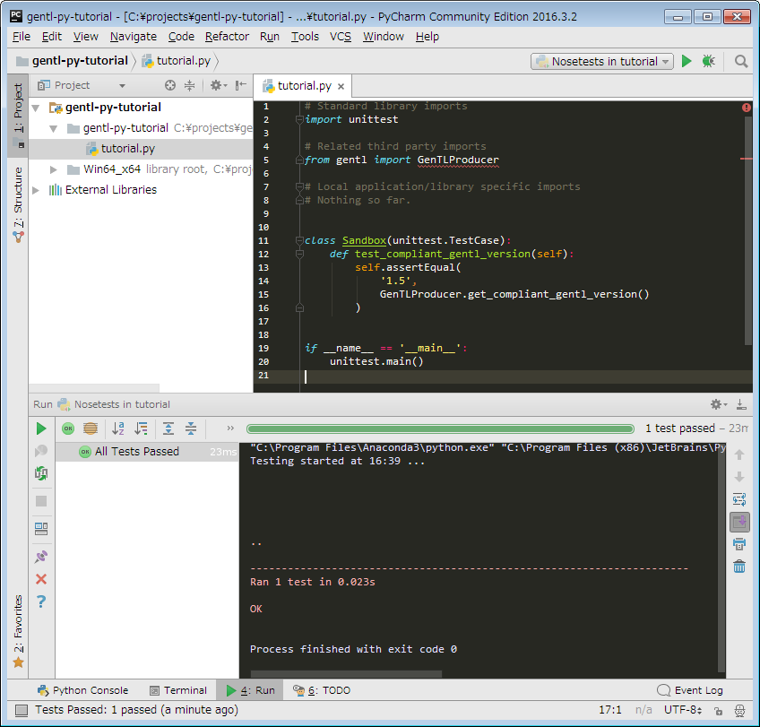

Components¶
The GenTL-Python Binding and its required software modules consist of the following component:
gentl.py_gentl.so(or_gentl.pydfor Windows)setup.py
They are provided being bundled by the GenICam reference implementation package and you can download it from the EMVA website.
Getting Started¶
In this chapter, we introduce a way to write code that uses gentl in a Python IDE called PyCharm with a Python interpreter distributed by Continuum Analytics being bundled in a package named Anaconda. We go through the following steps to setup a workspace in this chapter:
Checkout a GenICam working copy from the official SVN repository.
Build required modules from the source.
Install a Python interpreter.
Install a Python IDE.
Create a Python project in the IDE.
Set up the Python project.
Write code and test it.
The GenICam Source Package¶
In this example, we use the gentl module building it from scratch so you have to get the GenICam source package first. The GenTL-Python Binding still be under development process and the development branch is available at the following URL:
Please follow the instruction described in the readme.md file in the source/Bindings directory to build the required modules by yourself. If you have a markdown file viewer, you should display the file like this:
{kind=link}

Anaconda¶
Anaconda is an open source distribution of the Python for scientific computing and it aims to simplify package management and deployment. Anaconda provides a package management system called conda and it’s a remarkable advantage of the distribution. By the way, Anaconda is definitely great but please note that it’s not available on ARM. Sigh.
Anyway, you can download the installer at the following URL (IMPORTANT: The gentl module is available with Python > 3.4. It doesn’t work with any of Python 2):
Continuum Analytics provides another minimalistic package named Miniconda. If you want to save disk space, then you should go with Miniconda. Miniconda installers can be downloaded at the following URL:
PyCharm¶
PyCharm is a Python IDE that is developed by JetBrains. You can download the installer at the following URL; JetBrains has prepared installers for Windows, Linux, and macOS:
In this example, we use the PyCharm Community edition 2016.3.2. The installation process is straight forward so we intentionally omit the detail.
Creating a Python Project¶
Okay, let’s start the tutorial. We go through the following steps in this section:
Launch PyCharm.
Create a Python project.
Let PyCharm to know the location of the
gentlmodule.Write your Python code.
First, launch PyCharm. Then you will see the following window pops up. In the popped-up window, click Create New Project in the middle of the window.
{kind=link}

Second, fill out the root directory of the Python project that you’re going to newly create, and select a path to the Python interpreter. In this example, we named gentl-py-tutorial as its project name and used Python 3.5 as the Python interpreter.
{kind=link}

Then the main windows pops up. You can find out your project name, gentl-py-tutorial in the Project pane.
{kind=link}

So let’s tell the project where the gentl module is located. From the Menu bar on the top, click File - Settings.... You will see the following window pops up. In the left pane, select Project: gentl-py-tutorial > Project Structure. Then select + Add Content Root in the top-right corner.
{kind=link}

Then another window will pop up as follows and select a directory where the gentl module is located and click OK button in the bottom-right corner. In this example, the GenICam source package has been located at C:\projects\genicam on a x64 machine so the target directory is C:\projects\genicam\bin\Win64_x64.
{kind=link}

Selecting the module directory, the Setting windows would look like this. You should be able to find out the directory you recently selected is listed in the right pane. Having confirmed that the directory in the pane, just click OK button and go back to the main window.
{kind=link}

Now you can start to write code. Right-clicking the project folder in the roject pane in the left most of the main window, click New - Python File. We name the file tutorial.py and click OK button.
{kind=link}

Paste the following code to tutorial.py. The following code is to check if the imported GenTLProducer class of the gentl module returns the correct compliant GenTL version as a str object.
# Standard library imports
import unittest
# Related third party imports
from genicam.gentl import GenTLProducer
class PythonBindingTester(unittest.TestCase):
def test_compliant_version(self):
self.assertEqual(
'1.5',
GenTLProducer.get_compliant_version()
)
if __name__ == '__main__':
unittest.main()
Selecting tutorial.py in the Project pane, right-click the file name and click Run 'tutorial' to just run the script or Run 'tutorial' to debug the script. Now we just run the script so click Run 'tutorial'.
{kind=link}

If the above code correctly worked, the IDE should show OK as follows in the bottom of the IDE. Please check the setup again if it didn’t work.
"C:\Program Files\Anaconda3\python.exe" C:/projects/gentl-py-tutorial/tutorial.py
.
----------------------------------------------------------------------
Ran 1 test in 0.000s
OK
Process finished with exit code 0
You have achieved the aim of this chapter. You will get deeper into the usage in the following chapters.